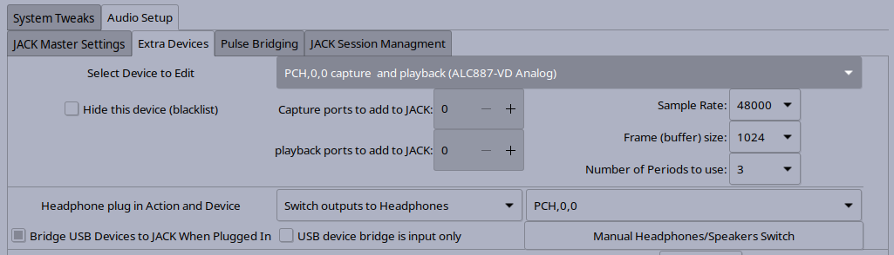

The Extra Devices tab allows other audio devices in the system to show up as JACK clients and be used by JACK applications. These bridges are created using zita-ajbridge a light weight but high quality bridge. These bridges use resampling to make sure the audio is in sync with the master audio device.
Studio Controls keeps it's own database of devices, it includes both devices Studio Controls can see in the system as well as devices that have been plugged before. This tab sets up what autojack will do when it detect these devices are present.
The Select Device to Edit drop down chooses the device the settings in this tab apply to.
The Hide This Device check box will tell autojack to ignore this device. It will also keep this device from showing up in the JACK master drop downs.
JACK Base Name Is the base part of the name that will be used for an extra device bridge for this device. An -in or -out will be added to this to keep all JACK client names unique.
The Sample Rate, Buffer Size and Number of periods are the same as for JACK master. The device may not work at the same rate, buffer size or number of periods as JACK master, that is ok. Zita-ajbridge can deal with the difference.
Note: Studio Controls tries to find the range of sample rates a device supports. However, more rates may be displayed than are supported for some devices.
Capture and Playback ports is the number of ports that should be created for input or output bridges. A port count of zero is the same as off or not used. A number greater than the available ports on the device will use the maximum number of ports available.
In some cases it is helpful if USB devices will just show as a JACK client without setup ahead of time. There are two checkboxes that control this:
Bridge USB Devices to JACK When Plugged In Auto bridges any unknown USB device when it is plugged in. If the user has set this device to zero ports or has hidden the device, it will not be auto connected.
USB device bridge is input only is used for USB devices that are input only but are detected to also have outputs and create extra noise when opened as an output as well.
Headphones can sometimes be detected by the system if they are motherboard headphones or USB headphones. Three settings are available for headphones:
 Previous: Jack Master Settings
--- Introduction ---
Next: Pulse Bridges
Previous: Jack Master Settings
--- Introduction ---
Next: Pulse Bridges